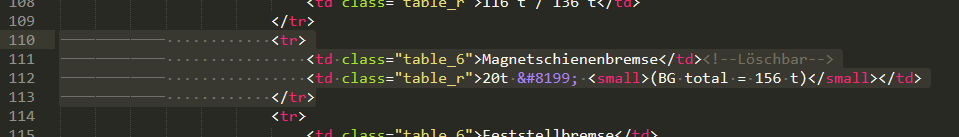
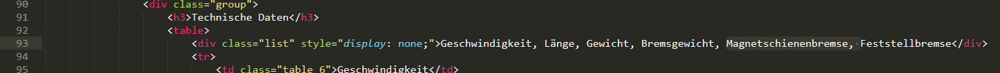

Anleitung
Infos
| Name | |
|---|---|
| Übergruppe | Lokomotiven, Passagierwagen |
| Untergruppe | Triebzüge, Kranwagen |
| verlinkter Wagen | Wagen zudem der Link führt |
| Wagen | Der Wagen |
| Inserts | |
| Typ | Der Name des Wagens wie ABe 8/12 oder A 1225 - 1226 (Beachte das die Nummer nur bei den Wagen hingeschrieben werden, welche keinen eigenen Antrieb haben.) |
| Name | Der Abgekürzte Name wie ZTZ |
| Name2 | Der Taufname wie Allegra |
| Nummer | Die Nummer des Wagens wie 3501 - 3515 oder 1223 |
| id | Die id des Wagens entspricht meistens dem Namen des Wagens. Im Allgemeinen darf er aber nur kleine Buchstaben, Zahlen, sowie Binde- und Unterstrich enthalten. Zusätzlich müssen ü mit ue, ä mit ae und ö mit oe ersetzt werden. Beispiel id: abe8-12_3501 , Ge4-4I_601 , a_1225 , haik-v_5101 Im Grundsätzlichen werden Lehrzeichen mit einem Unterrich und Schrägstriche mit einem Bindestrich ersetzt. |
| Farbe | #2f4c2b lokomotiven #803034 personenwagen #31459c gepaeckwage #5b493d gueterwagen #555655 dienstwagen #906d11 gleisbaumschienen |
| Spezialzeichen | |
| Text in Klammern | In einen <small> tag |
| Grösserer Abstand | Spezialzeichen   eingefügen. Dabei kann mit Leerschlägen vor und nach dem Zeichen noch grösserer Abstand erstellt werden. |
| Neue Zeile | Spezialzeichen <br> tag eingefügen |
| Nicht definitive Daten | In ein <u> tag |
1. Untergruppe
- Öffne 1 auswahlseite.html
- Zeile 5: Ersetze Triebzüge mit der Untergruppe.
Wiederholen auf Zeile 6 und 30. - Zeile 24: Ersetzte lokomotiven mit der id der Übergruppe und #2f4c2b mit der Farbe der Übergruppe.
- Öffne 1.1 auswahlseite link.html
- Zeile 3: Ersetze triebzuege mit der id der Untergruppe und abe8-12_3501 mit der id des verlinkten Wagens.
- Zeile 5: Ersetze lokomotiven mit der id der Übergruppe, triebzuege mit der id der Untergruppe und abe8-12_3501 mit der id des verlinkten Wagens.
- Zeile 8: Ersetze ABe 8/12 mit dem Typ des verlinkten Wagen und 3501 - 3515 mit der Nummer des verlinkten Wagens.
- Zeile 12: Ersetze den weissen Inhalt mit dem derüberstehenden Thema des verlinkten Wagens.
Wiederholen auf Zeile 14, 18, 22 und 26. - Kopiere den gesammten Text mit Ctrl + a und halte danach Ctrl + z gedrückt, bis sich der Text nicht mehr verändert und gehe zurück in das Dokument 1 auswahlseite.html.
- Zeile 33: Drücke die Taste Home und füge den kopierten Text mit Ctrl + v ein
- Wiederhole die Schritte ab 4. bis alle verlinkten Wagen eingefügt sind. Achte darauf, dass der erste verlinkte Wagen, später der unterste in der Liste sein wird.
- Speichere das Dokument mit Ctrl + Shift + s im Ordner der Webseite unter rollmaterial-rhb/data/"id der Übergruppe dar Untergruppe"/"id der Untergruppe".html
- Schliesse das Dokument ohne zu speichern.
2. Gesammt Komposition
- Öffne 2 gesammt_komposition.html
- Drücke Ctrl + H und gib im ersten Feld ABe 8/12 ein und im zweiten Feld der Typ des Wagens. Drücke danach auf Replace All.
- Drücke Ctrl + H und gib im ersten Feld 3501 - 3515 ein und im zweiten Feld die Nummer des Wagens. Drücke danach auf Replace All.
- Drücke Ctrl + H und gib im ersten Feld ZTZ ein und im zweiten Feld der Name des Wagens. Drücke danach auf Replace All.
- Drücke Ctrl + H und gib im ersten Feld Allegra ein und im zweiten Feld der Name2 des Wagens. Drücke danach auf Replace All.
- Drücke Ctrl + H und gib im ersten Feld abe8-12_3501 ein und im zweiten Feld der id des Wagens. Drücke danach auf Replace All.
- Wenn eine der Daten nicht vorhanden ist, kann sie einfach mit einem leeren Feld ersetzt werden. Beachte, dass wenn kein Name gegeben ist, ZTZ, durch ein leeres Feld ersetzt werden muss.
- Zeile 23: Ersetzte lokomotiven mit der id der Übergruppe des Wagens und #2f4c2b mit der Farbe der Übergruppe des Wagens.
- Zeile 262: Ersetze den weissen Inhalt mit den Fahrzeugen, welche diesen Wagen fernsteuern können.
Wenn zu viele oder zu wenige Linien vorhanden sind, kann die gesammte Zeile kopiert oder gelöscht werden.
Wenn der Wagen nicht ferngesteuert werden kann, kann der gesammte Inhalt von Zeile 258 bis und mit Zeile 269 gelöscht werden. - Zeile 278: Ersetze den weissen Inhalt mit den FDV des Wagens. Für Formatierung Gegebenes beachten.
Wenn der Wagen keine FDV hat, kann der gesammte Inhalt von Zeile 273 bis und mit Zeile 285 gelöscht werden. - Zeile 290: Ersetze den weissen Inhalt mit den geschleppt Überführungsmöglichkeiten des Wagens. Für Formatierung Gegebenes beachten.
Wenn der Wagen dazu keine speziellen Vorgaben hat, kann der gesammte Inhalt von Zeile 289 bis und mit Zeile 307 gelöscht werden. - Zeile 316: Ersetze den weissen Inhalt mit den Name, welche dieser Wagen mit dazugehöriger Nummer hat.
Wenn zu viele oder zu wenige Linien vorhanden sind, kann die gesammte Zeile kopiert oder gelöscht werden.
Wenn der Wagen keine Namen hat, kann der gesammte Inhalt von Zeile 312 bis und mit Zeile 333 gelöscht werden. - Ab Zeile 70: Ersetze den weissen Inhalt mit dem derüberstehenden Thema des Wagens.
Wenn am Ende der oberen Linie ein <!--Löschbar--> steht, kann, wenn die Daten für den Wagen nicht gegeben sind, dieser Eintrag gelöscht werden. Dafür muss die gesammte Linie von <tr> bis </tr> gelöscht werden.

Beachte, dass wenn ein Eintrag gelöscht wird, dass in class="list" der Eintrag ebenfalls gelöscht werden muss.
 - Speichere das Dokument mit Ctrl + Shift + s im Ordner der Webseite unter rollmaterial-rhb/data/"id der Übergruppe dar Untergruppe"/"id der Untergruppe"/"id des Wagens".html
- Schliesse das Dokument ohne zu speichern.
3. Einzelwagen (Nur Triebzüge)
- Öffne 3 einzelwagen.html
- Drücke Ctrl + H und gib im ersten Feld ABe 8/12 ein und im zweiten Feld der Typ des Wagens. Drücke danach auf Replace All.
- Drücke Ctrl + H und gib im ersten Feld 3501 - 3515 ein und im zweiten Feld die Nummer des Wagens. Drücke danach auf Replace All.
- Drücke Ctrl + H und gib im ersten Feld ZTZ ein und im zweiten Feld der Name des Wagens. Drücke danach auf Replace All.
- Drücke Ctrl + H und gib im ersten Feld Allegra ein und im zweiten Feld der Name2 des Wagens. Drücke danach auf Replace All.
- Drücke Ctrl + H und gib im ersten Feld abe8-12_3501 ein und im zweiten Feld der id des Wagens. Drücke danach auf Replace All.
- Zeile 23: Ersetzte lokomotiven mit der id der Übergruppe des Wagens und #2f4c2b mit der Farbe der Übergruppe des Wagens.
- Öffne 3.1 einzelwagen wagen.html
- Zeile 3: Ersetze lokomotiven mit der id der Übergruppe, triebzuege mit der id der Untergruppe und abe8-12_3501 mit der id des verlinkten Wagens.
- Zeile 6: Ersetze ABe 4/4 mit dem Typ des Einzelwagen, 35601 - 35615 mit der Nummer des Einzelwagens und MWC mit der Wagenposition des Einzelwagen.
- Ab Zeile 9: Ersetze den weissen Inhalt mit dem derüberstehenden Thema des Einzelwagens.
Wenn die Daten für den Einzelwagen nicht gegeben sind, kann dieser Eintrag gelöscht werden. Dafür muss die gesammte Linie von <tr> bis </tr> gelöscht werden.
- Kopiere den gesammten Text mit Ctrl + a und halte danach Ctrl + z gedrückt, bis sich der Text nicht mehr verändert und gehe zurück in das Dokument 3 einzelwagen.html.
- Zeile 31: Drücke die Taste Home und füge den kopierten Text mit Ctrl + v ein
- Wiederhole die Schritte ab 8. bis alle Einzelwagen eingefügt sind. Achte darauf, dass der erste Einzelwagen, später der unterste in der Liste sein wird.
- Speichere das Dokument mit Ctrl + Shift + s im Ordner der Webseite unter rollmaterial-rhb/data/"id der Übergruppe dar Untergruppe"/"id der Untergruppe"/"id des Wagens"/einzelwagen.html
- Schliesse das Dokument ohne zu speichern.